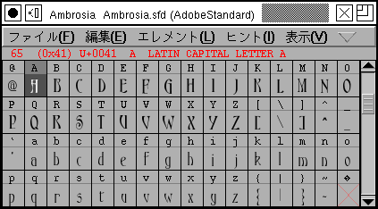
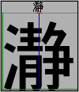

フォントビュー

フォントビューは、あるフォントに含まれる全てのグリフをアクセスできるリストです。
文字表示をさまざまなサイズから選択できます。 デフォルトでは、em 正方形を24 ピクセルでラスタライズします。 36, 48, 72 および 96 ピクセルを選ぶこともできます。 文字をアンチエイリアスされたグレイマップで表示するかを選ぶこともできます (上の図は、アンチエイリアス表示されています)。 アンチエイリアスを行うと表示は遅くなりますが、見栄えは良くなります (比較)。
ある符号位置に何も割り当てられていない場合、(空白文字に割り当てられた文字符号と異なり) 鈍い赤色の×字形がマスの中央に表示されます。
フォント内の各グリフの画像の上には、グリフをある伝統的な書式で表示しているラベルがあります。通常はこれは単に、標準フォントで表示した小さなグリフの画像です (上の図のように) が、グリフ名や Unicode のコードポイントまたはエンコーディングを (16 進数で) 表示するように変更することができます。小さなビューでは (例えば 24 ピクセル表示では)ラベル全体を表示する余地がないので、それらは切り詰められるでしょう。
 あるグリフに最後の (PostScript) ヒントを付け加えた後にグリフを変更しているか、グリフに輪郭が含まれているのに (TrueType) 命令が含まれていないならば、そのラベルは青い枠線で縁取り表示されます。グリフの (TrueType) ヒントが今のアウトラインよりも古いものであれば、ラベルは赤い枠線で縁取り表示されます。
あるグリフに最後の (PostScript) ヒントを付け加えた後にグリフを変更しているか、グリフに輪郭が含まれているのに (TrueType) 命令が含まれていないならば、そのラベルは青い枠線で縁取り表示されます。グリフの (TrueType) ヒントが今のアウトラインよりも古いものであれば、ラベルは赤い枠線で縁取り表示されます。
グリフが何らかの背景レイヤを持っている場合、それは視覚的に表されます (現在はグリフラベルの背景を暗くすることによって表しています)
また、グリフアウトラインから生成した全てのビットマップフォントを表示することができます。表示(V) メニューから見たいサイズのビットマップを選んでください。
フォントのビットマップ版を見るとき、グリフアウトラインがあるのにビットマップが含まれていない (つまり、ビットマップを再生成する必要がある) とき、存在しないビットマップグリフは、注意をひきやすくするために赤い枠で囲んで表示されます。
小さなビットマップフォントは拡大表示されます。 フォントのピクセルサイズが 10 未満のときは通常サイズの 3 倍で、20 未満のときは通常サイズの 2 倍で表示されます。
メニューバーの直下には、最後に選択したグリフに関連する情報が表示されます。 まず現在のフォントにおけるグリフのエンコーディングが 10 進数で表示されます。 次はそのグリフの Unicode のコードポイントです (Unicode 文字でない場合、???? と表示されます)。 その次はそのグリフの PostScript 名で、最後が Unicode 名です。 全ての Unicode 文字が Unicode 名を持つわけではありません (例えば、CJK 文字は持っていません)。
カーソルをあるグリフの上に持って行ってしばらく待つと、そのグリフに関する情報を含む小さなポップアップウィンドウが表示されます。 Control キーを押しておくと、マウスを移動するまでそのウィンドウはその場に固定されます。
フォントビューで、メトリックの補助線 (ベースライン, 原点と送り幅) を表示することができます (表示(V)→横書きメトリックの表示法(H)...)。
これを行うときには、フォントを大きなピクセルサイズで表示することをお勧めします。さもないとウィンドウはごてごてして見にくくなります。
|
 |
| 横書きメトリックの各種の補助線を 96 ピクセルで表示しているところ。 青い線はベースライン。 左にある赤い小さな縦棒はグリフの原点を表す。 右側にある緑色の線は字送りの位置を表し、画面下の緑色の線は送り幅を表す。 (ふつうは両方同時に表示する必要はないはず) グリフは幅の中央に配置されており、このフォントの高さは表示枠の上端に、 深さは表示枠の下端に相当する。 |
縦書きメトリックの各種の補助線を 96 ピクセルで表示しているところ。 中央に引かれた青い垂直線は縦書きのベースライン。 上の小さな赤い横棒 (高さを表す線に重なる) はグリフの原点を表す。 下にある緑色の線は字送りの位置を、右にある緑色の線は送り幅を表す。 (ふつうは両方同時に表示する必要はないはず) |

フォントビューの上でドラッグすることにより、フォント内のグリフをいくらでも同時に選択することができます。Shift キーを押しながらクリックすることによりグリフを追加選択 (または選択解除) することができます。矢印キーを選択グリフの移動に使うことも可能です (範囲指定には Shift＋矢印キーが使えます)。グリフを選択した順番はある程度記録され、いくつかのコマンドは操作の時にそれを使用します。
選択したグリフは、以下の場所にドラッグ&ドロップすることができます。
- メトリックビュー
- この場合、グリフはフォントビューで選択された順番を保って、画面上の選択されたグリフ (メトリックビューでの選択グリフ) の前の位置に挿入されます。
- アウトラインビュー
- この場合、それらの文字は参照として表示されます。
-
グリフ情報ウィンドウの
[置換]/[合字]ダイアログ - この場合、それらの文字は置換または合字として表示されます。
[Tab] キーを押すと、何らかのデータが含まれている次のグリフに移動し、Shift + [Tab] キーで、有効なデータのある前のグリフに移動します。
選択されたグリフに対し、以下のような様々な操作を行うことができます。
- 一般的な変換操作を適用する (例: 20 ユニット右に移動してから180°回転する)
- 全てのパスをペンで描いた線に変換する
- いくつかのパスが交差する領域を整理する
- パスを単純化する
- アクセントつき文字を構築する
- ビットマップを再生成する
- 自動ヒントづけを行う
- 各種のメトリック設定を制御する
もちろん、それに加えて、カット&ペーストを行うことができます。通常、あるグリフをコピーするとそのグリフおよび付随するビットマップを全てコピーしますが、編集(E)→コピー元の指定(F) の項目選択で、現在表示されているフォントだけをコピーするように変更することができます。それにより、例えば 12 ピクセルフォントが表示されているときは、そのモードでは 12 ピクセルのビットマップフォントだけがコピーされます。切り取り(T) と クリア(L) は、コピーの対象となるデータを取り除きます。
貼り付け(P) はやや複雑です。一般的に、クリップボードにある物はコピーモードに関係なくすべて貼り付けられます。そのため、クリップボードに 12 ピクセルのビットマップが含まれている場合、フォントビューがアウトラインを表示していたとしても、貼り付けを行うと 12 ピクセルフォントのデータが書き換えられます。この動作には一つ例外があります。クリップボードに 12 ピクセルのビットマップフォントが含まれていて、フォントビューが現在 17 ピクセルのビットマップを表示しているような場合、貼り付けられたデータは現在表示中のビットマップに置かれます。
フォントビューへの貼り付けを行うと、そのグリフに以前含まれていたスプラインは完全に削除されます (アウトライングリフビューへの貼り付けでは以前あったスプラインデータへの追加を行う点が異なります)。フォントビューへの貼り付けでは、グリフの幅もコピーの対象になります。
任意の文字をキー入力することにより、その文字へスクロールして移動することができます。ダイアログを使って、それよりわずかに汎用的な方法でビュー内を飛び回ることもできます。グリフの名前 (フォント内に含まれる全てのグリフには名前がついています)、エンコーディングの値、Unicode エンコーディングでの値、または (2 バイトフォントでは) 区点番号を入力することができます。
マウスの右ボタンを押すとポップアップメニューが出て来ます。
エンコーディングと文字集合
文字集合 (character set) は、一定の文字の集まりのことです (例えば、アルファベットに含まれる全ての文字は 1 個の文字集合となるでしょう)。エンコーディング (符号化方式) は、与えられた数値 (しばしば 0 から 255) を文字に対応づける関数です。しばしばこれら 2 つは同義的に用いられ、一般的には、あるエンコーディングにはある特定の文字集合が結びついているものと暗黙に前提されます。(厳密に言えば、文字集合は順序づけられていない集合であり、何らエンコーディングを暗示するものではありませんし、一部のエンコーディングは複数の文字集合に適用されて使用されます)。
FontForge 内の全てのフォントは、文字集合とエンコーディングの両方を備えています。ここで文字集合は、単純にフォントの含む文字の集合のことです。エンコーディングは、それらの文字が並んでいる順番です (時には、最初の 256 文字が並んでいる順番のことを指すこともあります)。フォント情報 ダイアログにより、フォントのエンコーディング (および文字集合) を選択することができます。1 個のフォントの中には、エンコーディングによって指定された文字集合に当てはまらない若干の追加グリフが含まれることがしばしばあります。それらのグリフはフォントの最後に配置され、フォントが出力される時 (例えば PostScript が生成される時やビットマップフォントが作成される時)、それらのグリフはフォント内に含まれますが符号化されません。(これは役に立つことがあります。特に、PostScript では実行時にフォントのエンコーディングを切り替えることができるので、1 個のフォントにキリル文字集合とラテン文字集合の両方がそれぞれ必要とするグリフを全て収録することができます。ただし、一度には 1 個の文字集合しか符号化することができません)。
エンコーディングによって、1 対 1 でない対応づけを行うことも可能です。というのも、文字に伴うグリフを二、三の文字が共有することも可能だからです (古典的な例としては、改行不能の空白がしばしば改行可能の空白と同じグリフを共有していることがあります)。FontForge がこのようなエンコーディングに出会ったときは、それぞれの項目に対して文字の構造体を作成し、それらの構造体の一つにグリフを描画するためのデータを格納し、その他の文字には文字の実体に対する参照を格納します。それら全ての文字は同じ名前を持つことになります。FontForge がフォントを生成する時はこのような場合を探し出し、1 個のグリフに対して複数の参照を含むエンコーディングベクタをもつフォントに変換します。
1 個の文字が複数の異なるグリフに対応するような符号位置が存在することも可能です。例えば、アラビア文字ではほとんどの文字が単語の最初・中間または最後のどこに位置するか、または単体で (孤立して) 表れるかによって最低 4 種類の異なるグリフを使用します。
カスタムエンコーディングを作成することもできます。一般的に、フォントのエンコーディングベクタの一部分として含まれるのは、カスタムエンコーディングのうちの先頭 256 項目だけです)。エレメント(L)→グリフ情報(I)... コマンドを使用して、フォント内の任意のグリフの名前を変更することができます。これを行うと、フォントは強制的にカスタムエンコーディングに変換されます。
たくさんの標準エンコーディングがプログラムに組み込まれています。ISO 8859 で定義されたエンコーディングが 14 種類、米国と西ヨーロッパの Macintosh で使用されるエンコーディング、米国と西ヨーロッパの MS Windows で使用されているエンコーディング (ISO 8859-1 を少しだけ拡張したものです) があります。組み込みの 2 バイトエンコーディングもいくつかあります。それらのいくつかは、現在人間が用いている世界の全ての文字を指定することを目標にしている Unicode のサブセットです。多数の CJK (中国・日本・韓国) の 2 バイト文字集合が存在します。エレメント(L)→グリフ情報(I)... ダイアログで、独自のエンコーディングを追加することができます。何がエンコーディングに含まれているかもこのページで簡単に説明しています。
あるベンダによる特定のエンコーディングの定義が他のベンダによるものと微妙に異なることがあり得ます。 それらのエンコーディングについては、Unicode Consortium が指定する定義に従ったつもりです。 Microsoft が使用する Symbol エンコーディングは Unicode の定義と異なることが判明しています (通常は、例えばオメガがオーム記号になっているような単に同義の文字に置き換わっているだけです)。
Adobe は、ギリシャ文字の名前づけに関してまずい方針を採用してしまいました。 マイクロ記号に“mu", 増分記号に“Delta", オーム記号に“Omega" という名前を割り振っています。 そのためギリシャアルファベットには醜い名無しの穴が空いています。
CIDフォント (下記参照) にはエンコーディングがありません。 その代わり、エンコーディングを一般的なやり方で供給する、1 種類ないし数種類の CMap ファイルと一緒に使用するように設計されています。 CMap ファイルは FontForge のスコープ外です。 Adobe は、無料で入手可能なファイルを数多く提供しています。
最後にもう一つ、“Compacted”と呼ばれるエンコーディングがあります。このエンコーディングは単なる連続したグリフのリストで、空のスロットを含まない物です。CJK または Unicode のフォントを見るには、何千もの使用されていない符号位置を渡り歩く必要がないので、ふつうはこの方が便利です。
Unicode (ISO 10646)
PostScript® は全ての Unicode 文字に名前を割り当てています。それらの文字の一部は非常に明瞭で、例えばラテンアルファベットの文字は“A”という名前です。一部はもっと分かりにくく、ヘブライ文字のアレフは“afii57664”という名前で、その他の物は Unicode の 0x8765 に位置する文字を単に“uni8765”のようにしています。
PostScript の Unicode エンコーディングは Unicode 標準とうまく咬み合っていません。おそらく、これは PostScript がグリフを扱うのに対して Unicode は文字を扱っているため、PostScript では Unicode が区別しているスペースとノーブレークスペースの区別がない (そして後者に符号を割り当てていない) のが原因でしょう。
Unicode の Web サイトによると、Unicode の最初 256 文字は ISO 8859-1 (ISO ラテン 1) と同じです。しかしながら、PostScript の ISOLatin1 エンコーディングは、Unicode で指定されている物とわずかな差があります。私はこの背景にある理由を説明できません。FontForge は PostScript の ISOLatin1 エンコーディングベクターを使わず、その代わりに Unicode エンコーディングベクターの最初の 256 個のコード位置を使用します (PostScript ではなく Unicode の習慣に適合するようにわずかに変更してあります。そういうわけで、私はノーブレークスペースとソフトハイフンを含めています。
FontForge は 2 つの微妙に異なる Unicode のエンコーディングをサポートしています。第 1 は、Unicode の最初の 65536 文字 (基本多言語面 (BMP)) のみを含み、2 番目はメモリの許す限り多くの文字を含むことができます。BMP の外側では文字定義は非常に疎らなので、さしあたり BMP だけしか使いたいと思わないでしょう。今のところ、文字が定義されているのは、第 0 面 (BMP, U+0000〜U+FFFF), 第 1 面 (SMP, 第二多言語面, U+1000〜U+1FFFF)、第 2 面 (SIP, 補助漢字面、U+20000〜U+2FFF) および第 14 面 (SSP, 補助特殊用途面, U+E0000〜U+EFFFF) だけです。
CID キー指定フォント
PostScript の標準のメカニズムはアルファベットと音節文字に対しては割合うまく働きますが、CJK (中国語・日本語・韓国語) フォントは、厖大な文字数を必要とするため、より複雑なたくらみを必要とします。Adobe の現在の解決法は CID キー指定フォントと呼ばれ、それぞれがグリフ記述の集合体であるいくつかのサブフォントからなる 1 個のフォントで、それらのグリフにはエンコーディングも定められておらず名前もついていません。
FontForge が CID フォントを読み込むと、CIDという名の特殊メニューを表示し、そこには (他の項目に加えて) フォント内に含まれる全てのサブフォントのリストを表示します。起動時には、FontForge は (事実上ランダムな) 1 個のサブフォントを選んでフォントビューに表示します。CID メニューによってどのフォントが表示されているかを変更することができます。
CID メニューでは、通常のフォントを CID キー指定フォントに変換することもできます。それはオリジナルフォント 1 個のみを含むコレクションを作成します (後で他のフォントを追加したり、空のフォントを挿入したりできます)。しかし、コレクションを作成する前に、FontForge はどのグリフセットを使うのか知っていなければなりません。グリフセットは単なるグリフの集まりで、もし新しいセットを定義したいならそうすることもできます (ただし、その場合は自分自身の CMap ファイル等を定義する必要があり、恐らくそうするだけの価値はないでしょう)。Adobe は日本語用のグリフセット (実際には 2 種類あります。一つは JIS X 0208 に対応し、もう一つは JIS X 0212 です)、韓国語用 (Wansung と Johab)、繁体字中国語 (Big5) と簡体字中国語 (GB2312) を既に定義しています。これらのグリフセットは上に挙げた規格に基づいていますが、それぞれのセットには追加のグリフがたくさんあります。Adobe は Unicode 用に動作するグリフセットも定義していますが、ただしそれは“Identity”と呼ばれています。FontForge はこれらのグリフセットを組み込んでいないので、それを最初に使用するときに読み込まなければなりません。 以上のグリフセットのそれぞれに 1 個ずつの定義ファイルが用意されていて、“.cidmap”という拡張子が付けられています。これらは全部ここからダウンロードすることができます。
その他たくさんの文字セットがそこら中にありますが、それはパブリックドメインではなく、それを自分の手元に入手することはできませんでした。
Adobe は各グリフセットを 3 個の値で識別しています: 登録者 (registry)、順序づけ (ordering) および補遺番号 (supplement) です。登録者はグリフセットを定義する組織の名前で (Adobe は自分自身を Adobe と呼んでいます)、順序づけはグリフセット (Japan1, Korea1 等) を識別し、補遺番号は、順序づけが何度更新されたかを示します。グリフは順序づけに追加することだけが許され、決して削除されません。それにより、古いフォントを完全に新しいグリフセットで記述することができますが、古いグリフセットで新しいフォントを表現した物は、いくつかアクセスできない文字が出る結果となります。そういうわけで、完全な cidmap 名は以下のようになります:
Adobe-Japan1-4.cidmap
Adobe-Korea1-2.cidmap
警告: CID フォント (実際には全ての CJK フォント) を FontForge で編集するには厖大な量のメモリを必要とします。 多くの物が 256MB のメモリと 384MB のスワップ容量をもつマシンで編集できるのを確認しています。
メモリが不足しそうなときには、アンドゥ履歴のクリア(V) コマンドを使えばメモリを開放することができます。FontForge はメモリを使い果たしてしまう危険から常に守られているわけではなく、場合によっては OS からいきなり SIGKILL シグナルを送られてしまうことがあります。
マルチプルマスターフォント
フォントがマルチプルマスターフォントである場合も、いくつかのサブフォントが存在しますが、この場合は全てのサブフォントが同じグリフセットを持っています。各サブフォントは、あるフォントファミリーの 1 スタイルにあたるグリフを提供します。MM メニューでは、フォントビューでどのスタイルのファミリーが見えるかを制御できるほかに、その他いくつかのマルチプルマスターフォントを扱うフォントが存在します。
縦書きメトリック
CJK フォントは通常縦書き用のメトリックを備えている必要があります。ラテン文字 (やキリル文字、ギリシャ文字) のフォントは一般的にそれを含んでいてはなりません。FontForge が縦書きメトリックを含むフォントを読み込むと、それらのメトリックを保持しますが、FontForge が新しいフォントを作成した時には、そのフォントでは縦書きのメトリックが使用可能にはなっていません。
あるフォントで縦書きのメトリックを使用可能にするためには、エレメント(L)→フォント情報(F)... から [一般情報] タブを選択し、[*] 縦書きメトリックが存在 チェックボックスにチェックを入れます。これを使うと、そのフォントの縦書きの原点を設定し、各グリフに縦書きの字送りのデフォルト値 (高さ+深さ) を EM サイズ単位でセットします。
縦書きの原点は、縦書きメトリックの Y 軸方向の高さ (デザイン座標系で) と一致します。
アウトライングリフビューでは、横書きメトリックを調整するのと同様の方法で縦書きメトリックを調整することができます。
フォントビューで縦書きのメトリックを表示させるには、横書きメトリックと同様に、表示(V)→縦書きメトリックの表示法(V)... を使用します。